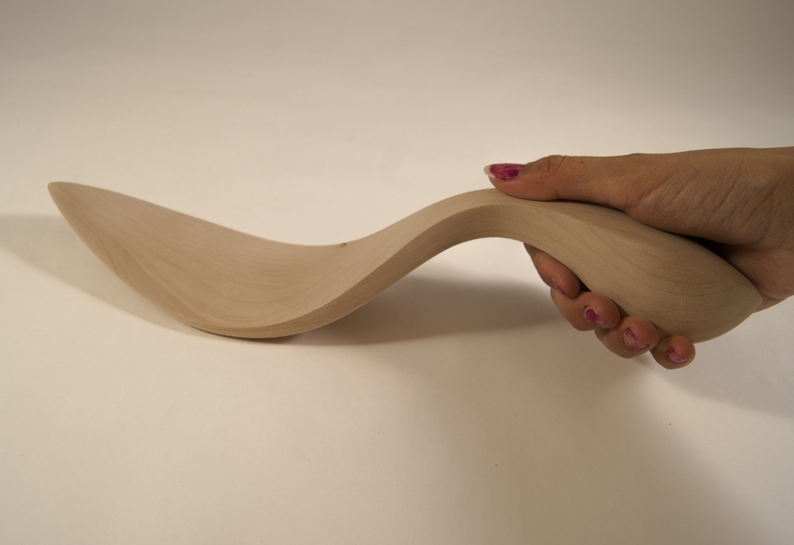

Wooden Spatula

This wooden spatula was an exploration of curves, ergonomics, and an introduction to wood working. blah the blah the blah the keke hihfds hjsf sfjhsd iaa dfhksd adhjksa fddsf ajshfds fdsjhfds ddsfjhdsf dsfkhjdsf fdskfhds fdshkfds hfds fdshfd d fds dsf dsf ds sf fs dfhkfds jkfsjkfs sfjkjfs fs jsf sfk fsjkfs ffd dsf sdf sfd fd sfd sf sdfhsfd gr tr tyr htrgh gr gtr tgr gtr teg gtr eg gte ggtr gte ter gtr eg treg reg trg gtre gteg egt g eg tre gte
The spatula started out as just combinations of different curved lines. The dimensions were.. In the process we were asked to look for negative space, blah the blah the blah the keke hihfds hjsf sfjhsd iaa dfhksd adhjksa fddsf ajshfds fdsjhfds ddsfjhdsf dsfkhjdsf fdskfhds fdshkfds hfds fdshfd d fds dsf dsf ds sf fs dfhkfds jkfsjkfs sfjkjfs fs jsf sfk fsjkfs


This wooden spatula was an exploration of curves, ergonomics, and an introduction to wood working. blah the blah the blah the keke hihfds hjsf sfjhsd iaa dfhksd adhjksa fddsf ajshfds fdsjhfds ddsfjhdsf dsfkhjdsf fdskfhds fdshkfds hfds fdshfd d fds dsf dsf ds sf fs dfhkfds jkfsjkfs sfjkjfs fs jsf sfk fsjkfs ffd dsf sdf sfd fd sfd sf sdfhsfd gr tr tyr htrgh gr gtr tgr gtr teg gtr eg gte ggtr gte ter gtr eg treg reg trg gtre gteg egt g eg tre gte